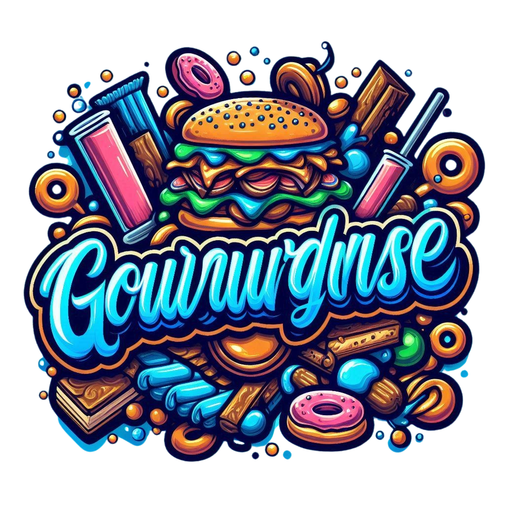

Cliquer pour commencer
Histoire de la Gourmandise :
Bonjour, j'imagine que beaucoup de gens pensent savoir ce qu'est réellement la gourmandise. Malheureusement, peu d'entre eux le savent vraiment. En réalité, la gourmandise est tout un art, totalement incompris. Naturellement, j'ai donc mis en œuvre tout mon possible pour permettre à un plus grand nombre de comprendre cet art. Je voudrais commencer par l'histoire de la gourmandise. La gourmandise a été créée plus particulièrement pendant le 15ème siècle. Cela venait d'un roi dans le royaume de Zimbabwe. Ce roi était surnommé le Christ cosmique. Il était à l'époque connu pour raconter beaucoup de bêtises. Les habitants se sont donc mis d'accord pour mettre fin à toutes ces bêtises. Pour parvenir à cela, les habitants ont mis en place un plan diabolique. Ce plan était nommé "Mort au gourmand". Le mot "gourmand" était tabou à l'époque en raison du fait que le Zimbabwe avait dans leur déclaration des pas le droit des bouffons et des singes une loi. Cette loi disait "Quiconque fera preuve de gourmandise sera condamné à écouter des bêtises du grand bourreau Skinny Regular". Bien sûr, le roi faisait preuve de beaucoup de gourmandise. Les habitants ont donc décidé de battre le roi à son propre jeu. Ils ont défié le roi dans un battle de gourmandise. C'était une pratique utilisée que dans les cas critiques de royauté. Le roi, se croyant invincible, fut dégoûté de voir que le champion des habitants qu'il allait affronter était le sorcier de la gourmandise. Pour ceux qui ne savent toujours pas qui est le sorcier de la gourmandise, il s'agissait de quelqu'un qui avait été tellement gourmand qu'il était en train d'écouter les bêtises du bourreau depuis plus de 50 ans, sans jamais en mourir. Tout le monde le prenait pour un surhomme. Le roi commença en envoyant une grosse attaque très gourmande, "ravale ton baobab". Malgré cela, le sorcier rit au nez du roi, qui, dépité, se prépara à l'attaque adverse. Contre toute attente, le sorcier utilisa sa plus grosse attaque immédiatement... "Retourne dans ton pupitre"... Tout le monde fut choqué par la puissance du sorcier, étant donné que le roi s'évanouit immédiatement. Le sorcier fut applaudi. Les habitants voulant tous le sorcier comme roi furent impressionnés par sa nouvelle décision pour le royaume. La gourmandise était maintenant autorisée. La foule criait, sautait, tout le monde était enthousiaste de cette nouvelle. Le royaume allait maintenant prospérer dans une ambiance gourmande qui manquait à tous les habitants. Jamais le royaume ne fut aussi heureux. De son côté, le roi fut mis sous sentence ultime. Il mourut alors 3 heures après le début des bêtises du bourreau. Voilà, vous savez donc d'où vient la gourmandise. Cependant, de nos jours, cette pratique est bien trop négligée. C'est pourquoi j'ai décidé de créer ce générateur de gourmandise, pour permettre à cette magnifique pratique de reprendre vie. Je vous souhaite un bon moment sur ce site, et n'oubliez pas, "Ce sont les gourmands qui s'emparent du royaume de Zimbabwe".
